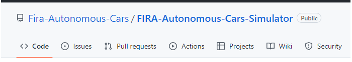

Learn about Autonomouns Car Driving (Simurosot)
Simurosot is a new categories to Fira Malaysia in 2022. This one has two Categories, namely Autonomous Car Challenge and Drone Simulation Challenge. In this tutorial will be mentioned Autonomous Car Challenge, if you want to know more, you can click the button below.
1. Environment Setup (Operating System)

Environment: Ubuntu 20.04
You have 2 way to install Ubuntu on your laptop or desktop
1. Double Operating System (recommend)
2. Use Virtual Box (not recommend)
Step 1:
Step 2:
2. Environment Setup (Simulator)
Environment: Fira-Autonomous-Car-Simulator
Minimum Required:
-CPU: Intel® Core™ i5-5257U CPU @ 2.70GHz
-GPU: Intel® Iris 6100
-RAM: 8 GB
You may follow the step to install this simulator to your ubuntu 20.04.
3. Start Environment
Everytime to start the simulator, must to setup bash first use this command:
source ~/catkin_ws/devel/setup.bashNext, you may launch different environement use code below,
For Track Race Environment:
For Urban Race Environment:
roslaunch avisengine_environment track_urban_simple.launchRead Next ?